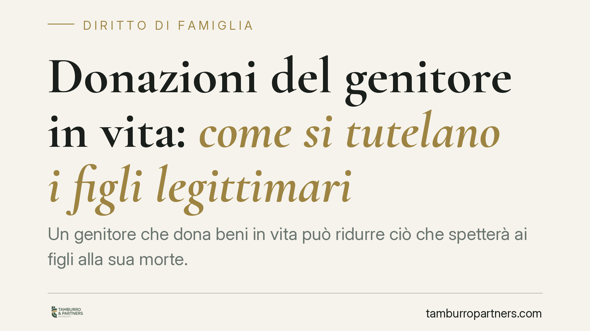

Donazioni del genitore in vita: come si tutelano i figli legittimari
Un genitore che dona beni in vita può ridurre ciò che spetterà ai figli alla sua morte. La legge riconosce ai legittimari strumenti per recuperare quanto leso, ma solo dopo l'apertura della successione. Vediamo quali sono, entro quali termini operano e cosa è utile predisporre già mentre il donante è in vita.

Il punto di partenza: la quota di riserva
Il codice civile riserva a determinati familiari (coniuge, figli, in mancanza di figli gli ascendenti) una quota del patrimonio del defunto: è la cosiddetta quota di legittima o di riserva. Questi soggetti sono i legittimari.
Le donazioni fatte in vita dal genitore concorrono a formare il patrimonio su cui si calcola la legittima. Se una donazione intacca la quota riservata a un figlio, si parla di donazione lesiva. Ma attenzione a una regola centrale: finché il donante è in vita, i figli non possono fare nulla. Non esiste un diritto attuale alla quota di riserva prima della morte del genitore. Ogni azione di tutela presuppone l'apertura della successione.
La riunione fittizia: come si misura la lesione
Per verificare se una donazione è lesiva si procede a un'operazione contabile detta riunione fittizia (art. 556 cod. civ.). In pratica: si prende il valore dei beni lasciati alla morte, si sottraggono i debiti e si aggiunge — solo sulla carta — il valore di tutto ciò che il defunto ha donato in vita.
Su questa massa si calcola la quota che spettava al legittimario. Se ciò che ha effettivamente ricevuto (per eredità o donazione) è inferiore, la differenza è la lesione. È un calcolo tecnico, che dipende dai valori al momento dell'apertura della successione, non a quello della donazione.
L'azione di riduzione
Lo strumento principale è l'azione di riduzione (artt. 553 e seguenti cod. civ.). Serve a rendere inefficaci, nei limiti del necessario, le donazioni che ledono la legittima, partendo dalla più recente e risalendo indietro nel tempo.
L'azione si prescrive in dieci anni che, secondo l'orientamento consolidato della Cassazione, decorrono dall'apertura della successione. Chi agisce deve aver prima accettato l'eredità con beneficio d'inventario, salvo le eccezioni previste dalla legge.
Se il bene è già stato venduto a un terzo
Accolta la riduzione, il legittimario ha diritto a riottenere il bene. Se il bene è ancora nelle mani del donatario, opera l'obbligo di restituzione previsto dall'art. 561 cod. civ.: il donatario deve rendere il bene, di regola libero da pesi e ipoteche.
Quando invece il donatario ha nel frattempo alienato il bene a un terzo, entra in gioco l'azione di restituzione contro il terzo acquirente disciplinata dall'art. 563 cod. civ. Qui la sequenza è rigida: il legittimario deve prima escutere il donatario (cioè tentare di soddisfarsi sul suo patrimonio) e solo se questo si rivela insufficiente può rivolgersi al terzo. È la cosiddetta preventiva escussione.
L'opposizione alla donazione
L'azione contro il terzo acquirente incontra un limite temporale importante, introdotto dalla L. 80/2005 e disciplinato dai commi 3 e 4 dell'art. 563 cod. civ.: trascorsi vent'anni dalla trascrizione della donazione, il bene non è più recuperabile presso il terzo (resta salva l'azione di valore contro il donatario).
Proprio per neutralizzare questo termine, il coniuge e i parenti in linea retta del donante possono notificare e trascrivere un atto di opposizione alla donazione. L'opposizione sospende il decorso del ventennio nei confronti di chi l'ha proposta. È uno dei pochi strumenti utilizzabili quando il donante è ancora in vita, perché non impugna la donazione ma preserva la possibilità futura di agire.
Implicazioni pratiche
Per un figlio, tutto questo significa che la reazione alle donazioni si gioca dopo la morte del genitore, con tempi e presupposti precisi. Ma alcune scelte, come l'opposizione alla donazione, vanno valutate prima, per non perdere l'aggancio sul bene ceduto a terzi. L'impatto concreto varia molto in base ai valori, alla data di trascrizione e alla presenza di terzi acquirenti: va valutato tecnicamente caso per caso.
Cosa fare in concreto
- Ricostruisci le donazioni fatte in vita dal genitore, recuperando atti e date di trascrizione: sono il presupposto di ogni calcolo.
- Verifica la data di trascrizione delle donazioni immobiliari, per capire se il termine ventennale dell'art. 563 cod. civ. è ancora aperto.
- Se sussistono i presupposti soggettivi, valuta l'opposizione alla donazione ex art. 563, commi 3 e 4, cod. civ. finché il donante è in vita.
- Dopo l'apertura della successione, rispetta il termine di prescrizione decennale dell'azione di riduzione e le regole sull'accettazione con beneficio d'inventario.
- Prima di agire contro un terzo acquirente, considera la preventiva escussione del donatario richiesta dall'art. 563 cod. civ.
*Contributo informativo a cura di Tamburro & Partners - Avv. Giuseppe Tamburro. Non costituisce parere legale.*
Ogni famiglia ha il suo equilibrio.
Separazione, divorzio, affidamento, assegno: se vuoi un confronto riservato su una specifica situazione, scrivi allo studio. Ti rispondiamo entro un giorno lavorativo.